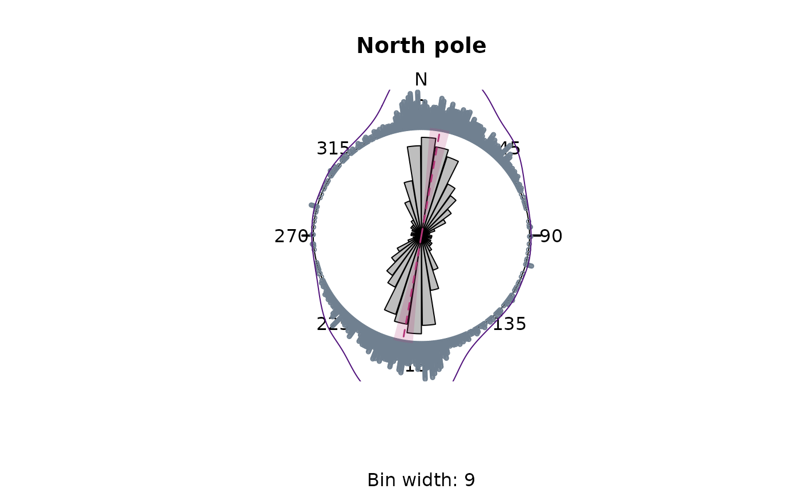

4. Circular statistics
Tobias Stephan
2024-05-29
Source:vignettes/D_statistics.Rmd
D_statistics.RmdThis vignette teaches you how to retrieve the mean direction of stress datasets.
library(tectonicr)
#> Registered S3 methods overwritten by 'spatstat.univar':
#> method from
#> mean.ecdf spatstat.geom
#> mean.ewcdf spatstat.geom
#> print.ewcdf spatstat.geom
#> quantile.density
#> quantile.ewcdf spatstat.geomMean direction
Directional data is \(\pi\)-periodical. Thus, for the calculation
of mean, the average of 35 and 355\(^{\circ}\) should be 15 instead of 195\(^{\circ}\). tectonicr
provides the circular mean (circular_mean()) and the
quasi-median (circular_median()) as metrics to describe
average direction:
data("san_andreas")
circular_mean(san_andreas$azi)
#> [1] 10.66733
circular_median(san_andreas$azi)
#> [1] 36Quality weighted mean direction
Because the stress data is heteroscedastic, the data with less precise direction should have less impact on the final mean direction The weighted mean or quasi-median uses the reported measurements weighted by the inverse of the uncertainties:
circular_mean(san_andreas$azi, 1 / san_andreas$unc)
#> [1] 9.973671
circular_median(san_andreas$azi, 1 / san_andreas$unc)
#> A
#> 36The spread of directional data can be expressed by the standard deviation (for the mean) or the quasi-interquartile range (for the median):
circular_sd(san_andreas$azi, 1 / san_andreas$unc) # standard deviation
#> [1] 38.44193
circular_IQR(san_andreas$azi, 1 / san_andreas$unc) # interquartile range
#> [1] 33.10713Statistics in the Pole of Rotation (PoR) reference frame
NOTE: Because the \(\sigma_{SHmax}\) orientations are subjected to angular distortions in the geographical coordinate system, it is recommended to express statistical parameters using the transformed orientations of the PoR reference frame.
data("cpm_models")
por <- subset(cpm_models, model == "NNR-MORVEL56") |>
equivalent_rotation("na", "pa")
san_andreas.por <- PoR_shmax(san_andreas, por, type = "right")
circular_mean(san_andreas.por$azi.PoR, 1 / san_andreas$unc)
#> [1] 137.9887
circular_sd(san_andreas.por$azi.PoR, 1 / san_andreas$unc)
#> [1] 37.30543
circular_median(san_andreas.por$azi.PoR, 1 / san_andreas$unc)
#> A
#> 135.6592
circular_IQR(san_andreas.por$azi.PoR, 1 / san_andreas$unc)
#> [1] 25.82388Rose diagram
tectonicr provides a rose diagram, i.e. histogram for angular data.
rose(san_andreas$azi, weights = 1 / san_andreas$unc, col = "grey", main = "North pole")
rose(san_andreas.por$azi, weights = 1 / san_andreas$unc, col = "grey", main = "PoR")
rose_line(135, radius = 1.1, col = "#009E73") # show the predicted direction
Statistical tests
Test for random distribution
Uniformly distributed orientation can be described by the von Mises distribution (Mardia and Jupp, 1999). If the directions are distributed randomly can be tested with the Rayleigh Test:
rayleigh_test(san_andreas.por$azi.PoR)
#> Reject Null Hypothesis
#> $statistic
#> [1] 0.7165212
#>
#> $p.value
#> [1] 5.606831e-242
#>
#> $p.value2
#> [1] 7.860367e-273Here, the test rejects the Null Hypothesis
(statistic > p.value). Thus the \(\sigma_{SHmax}\) directions have a
preferred orientation.
Alternative statistical tests for circular uniformity are
kuiper_test() and watson_test(). Read
help() for more details…
Test for goodness-of-fit
Assuming a von Mises Distribution (circular normal distribution) of the orientation data, a \((1-\alpha \%)/100\) confidence interval can be calculated (Mardia and Jupp, 1999):
confidence_interval(san_andreas.por$azi.PoR, conf.level = 0.95, w = 1 / san_andreas$unc)
#> $mu
#> [1] 137.9887
#>
#> $conf.angle
#> [1] 4.940342
#>
#> $conf.interval
#> [1] 133.0484 142.9291The prediction for the \(\sigma_{SHmax}\) orientation is \(135^{\circ}\). Since the prediction lies within the confidence interval, it can be concluded with 95% confidence that the orientations follow the predicted trend of \(\sigma_{SHmax}\).
The (weighted) circular dispersion of the orientation angles around the prediction is another way of assessing the significance of a normal distribution around a specified direction. It can be measured by:
circular_dispersion(san_andreas.por$azi.PoR, y = 135, w = 1 / san_andreas$unc)
#> [1] 0.0977037The value of the dispersion ranges between 0 and 2.
The standard error and the confidence interval of the calculated circular dispersion can be estimated by bootstrapping via:
circular_dispersion_boot(san_andreas.por$azi.PoR, y = 135, w = 1 / san_andreas$unc, R = 1000)
#> $MLE
#> [1] 0.1912895
#>
#> $sde
#> [1] 0.009804245
#>
#> $CI
#> [1] 0.1719488 0.2104056The statistical test for the goodness-of-fit is the (weighted) Rayleigh Test with a specified mean direction (here the predicted direction of \(135^{\circ}\):
weighted_rayleigh(san_andreas.por$azi.PoR, mu = 135, w = 1 / san_andreas$unc)
#> Reject Null Hypothesis
#> $statistic
#> [1] 0.4022963
#>
#> $p.value
#> [1] 3.552781e-14Here, the Null Hypothesis is rejected, and thus, the alternative, that is a uniform distribution around the predicted direction, cannot be excluded.
References
Mardia, K. V., and Jupp, P. E. (Eds.). (1999). “Directional Statistics” Hoboken, NJ, USA: John Wiley & Sons, Inc. doi: 10.1002/9780470316979.
Ziegler, Moritz O., and Oliver Heidbach. 2017. “Manual of the Matlab Script Stress2Grid” GFZ German Research Centre for Geosciences; World Stress Map Technical Report 17-02. doi: 10.5880/wsm.2017.002.